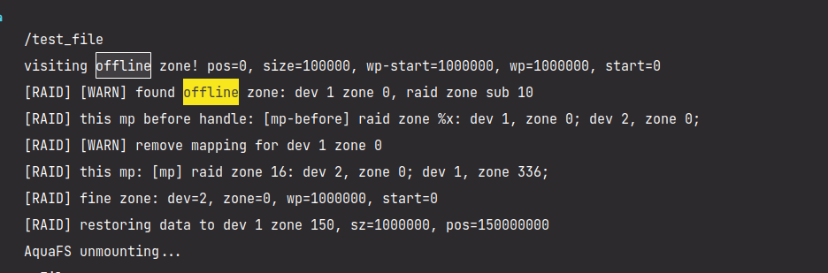
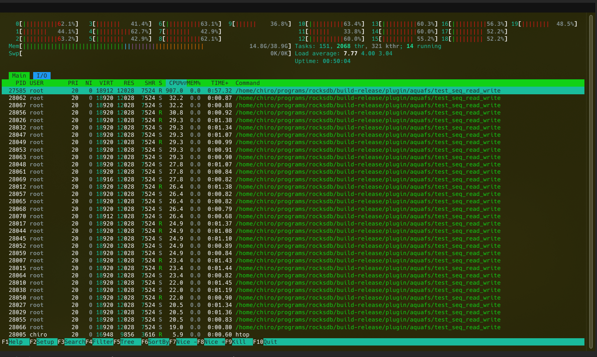
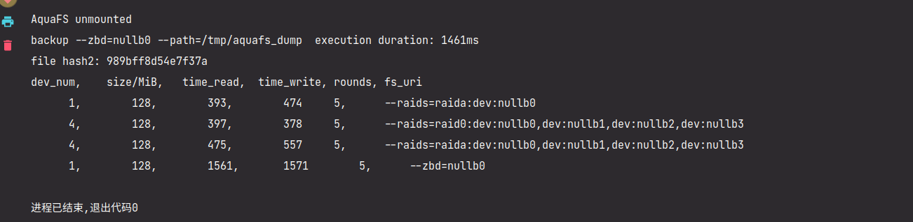
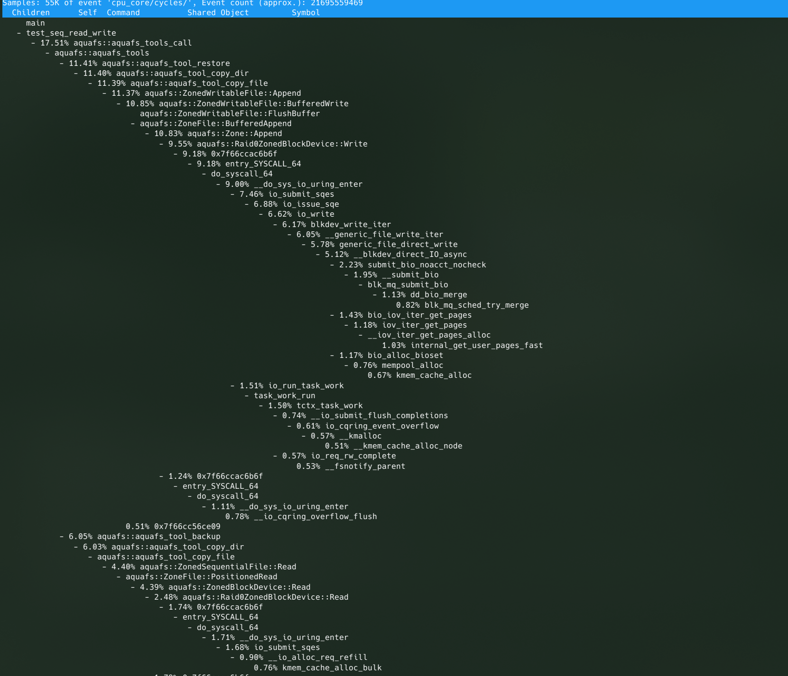

TODO List
RAID
-
完善数据恢复逻辑
-
当读写发现读写错误，且出错分区可以被数据恢复，则立即开始恢复数据。
-
先写入一个大文件，然后软件上设置一个块为
Offline，然后在读取的过程中自动修复
-
-
完善分区 RAID 自动映射逻辑
- 从命令行配置：如果访问到非映射区域则添加哪一种类型的 RAID 分区
- 持久化分区存储配置
-
添加
io_uring等异步优化-
liburing4cpp添加和测试 -
为全盘 RAID0 模式添加
io_uring- 将一个请求划分到不同设备和分区并进行分组和排序
- 将请求参数加入 RingBuf，有并行和串行逻辑
- 请求并等待请求结束
-
为分区 RAID0 添加
io_uring -
使用 C++20 的协程使
io_uring请求更加并行化
协程和
io_uring运行中的效果：
-
-
测试
-
可量化的 RAID 效果测试：

通过在读写函数中加上高精度延时模拟磁盘读写延迟，按照访问延迟和数据传输延迟延时，然后计量函数运行时间。
仍无法使用
nvmevirt等更合理的软件仿真方式。 -
程序性能测试
利用 perf 分析性能热点，效果为大都集中在 Kernel 内部的 IO 路径上

-
-
RAID5 逻辑
-
文档
- 摘要
- 概述
-
需求分析与调研
- 需求分析
- 往年队伍实现的分析
-
将原来调研的文档改改格式加进来
- Flash 调研
- ZenFS 调研
- 系统设计部分
-
系统实现部分
- 全盘 RAID 实现
- 分区 RAID 实现
- 分区 RAID 故障处理
- IO 加速
- 智能调参
- 总结和展望
- 参考文献
-
git 首页
- 添加测试效果图表
- 添加图表说明
-
完善一下在这里的摘要
- 创新点和特色（已经实现的和将要实现的）
- 完善一下主要工作和完成度、工作量
-
整理提交，将
submodule改成branch
-
图表
- 调参性能图表和说明